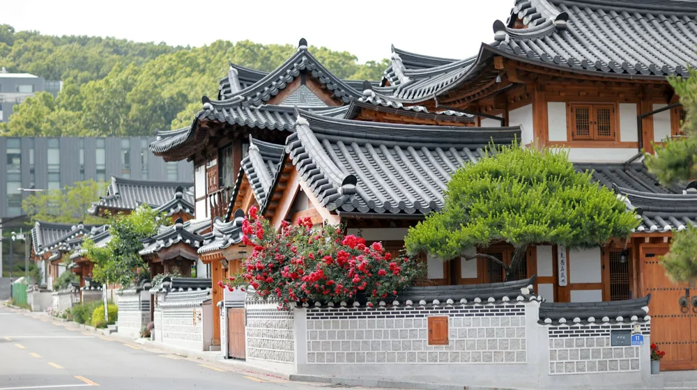
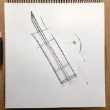

고택 숙박과 종가음식 체험, 실패 없이 예약하는 4단계 코스 가이드
사진: Gül Işık / Pexels (무료 이미지, 출처 표기)
고택 숙박과 종가음식 연계 코스란 무엇인가요?

조선시대 사대부의 숨결이 살아있는 고택(古宅, 오래된 한옥)에서의 하룻밤과 수백 년간 독창적으로 전수된 종가음식(宗家飮食, 종가의 제사나 손님맞이용 전통 음식)을 결합한 여행이 주목받고 있습니다. 단순히 잠만 자는 관광에서 벗어나 한국 고유의 주거 문화와 식문화를 깊이 있게 체험하는 힐링 코스입니다.
문화체육관광부와 한국관광공사의 발표에 따르면, 최근 지역 고유의 인문학적 자산과 미식을 연계한 '로컬 웰니스 여행'에 대한 선호도가 꾸준히 높아지고 있습니다. 특히 종가음식은 계절별 제철 식재료와 수십 년 묵은 씨간장, 천연 조미료를 사용해 깊은 맛을 내는 것이 특징입니다. 최근에는 전통 문화 보존을 위해 일부 종가에서 일반인 대상 식사 체험과 고택 숙박을 함께 연계하여 운영하고 있습니다.
전국 대표 고택 및 종가음식 연계 코스 비교
전국에서 전통 고택과 종가음식을 조화롭게 체험할 수 있는 대표적인 지역과 고택을 비교해 드립니다. 여행 목적과 이동 동선에 맞춰 가장 알맞은 곳을 선택해 보세요.
위 비교 자료는 2026년 기준 정보이며, 계절적 요인이나 종가 사정에 따라 세부 식사 메뉴나 체험 프로그램 구성이 달라질 수 있습니다. 방문 전 반드시 해당 고택에 예약 가능 여부를 직접 유선으로 재확인하시기를 권장합니다.
실패 없는 코스 예약 4단계 절차
종가음식은 일반 식당처럼 상시 대량 조리를 하지 않는 경우가 대부분입니다. 식재료 준비와 정성 어린 조리를 위해 철저한 사전 예약제로 운영되므로 다음 단계를 참고하여 차근차근 준비해야 합니다.
- 1단계: 목적지에 맞는 고택 선정 - 가고자 하는 지역과 한국관광공사 '한옥스테이' 인증 여부를 확인하여 신뢰도가 높은 고택을 후보지로 선정합니다.
- 2단계: 숙박 일정과 식사 가능 여부 유선 조율 - 종가음식 식사(주로 석식 또는 조식)가 숙박 패키지에 포함되어 있는지, 아니면 별도로 예약을 추가해야 하는지 종가 측과 직접 조율합니다.
- 3단계: 선호 식재료 및 알레르기 유무 전달 - 전통 간장, 된장 및 견과류가 다량 사용되므로, 특이 체질이나 알레르기가 있다면 예약 단계에서 조리 담당 종부님께 미리 알려야 조율이 가능합니다.
- 4단계: 이용 규칙 숙지 및 예약 확정 - 대부분의 고택은 목조 건물이므로 화재 예방 및 소음 통제 수칙이 엄격합니다. 전달받은 주의사항을 꼼꼼히 확인하고 예약을 확정합니다.
고택 숙박 시 반드시 알아야 할 현실적인 주의사항
전통 고택은 현대식 호텔이나 리조트와는 물리적 구조가 완전히 다릅니다. 미리 인지하지 못하면 머무는 동안 크고 작은 불편을 겪을 수 있으므로 아래의 체크리스트를 꼭 점검해 보세요.
- 개별 화장실 및 욕실 여부: 일부 문화재 지정 고택은 원형 보존을 위해 방 내부에 개별 욕실이 없고 외부 공동 욕실을 사용해야 합니다. 현대식 욕실 리모델링 여부를 반드시 확인해야 불편을 줄일 수 있습니다.
- 한옥 특유의 방음 한계: 창호지 문이나 얇은 흙벽 구조상 방음이 취약합니다. 늦은 시간 고성방가는 절대 금물이며, 다른 투숙객을 배려하는 마음이 필수적입니다.
- 취사 및 흡연 절대 금지: 목조 주택의 최대 약점은 화재입니다. 방 안에서 가스버너 사용, 취사, 흡연은 법적으로 엄격히 금지됩니다. 간단한 다과류 외의 조리 음식 반입은 자제하는 것이 예의입니다.
- 계절별 냉난방 대비: 온돌 난방이 잘 구비되어 있으나, 한옥 특유의 우풍(외풍)이 있을 수 있습니다. 동절기 방문 시에는 가벼운 겉옷이나 개인 보온용품을 준비하는 것이 좋습니다.
🔗 이 글도 함께 보면 좋아요: K-공예 원데이클래스, 실패 없이 고르고 예약하는 방법
관련 추천 상품
이 포스팅은 쿠팡 파트너스 활동의 일환으로, 이에 따른 일정액의 수수료를 제공받습니다.
자주 묻는 질문(FAQ) (탭하면 펼쳐져요)
Q1. 아이들과 함께 방문해도 괜찮을까요?
A. 가족 단위 방문을 대부분 환영하지만, 목조 건물 특성상 소음이 잘 전달되고 문턱이 많아 안전사고에 유의해야 합니다. 일부 고택은 조용한 쉼을 위해 노키즈존으로 운영되기도 하므로 사전 확인이 필수입니다.
Q2. 숙박을 하지 않고 종가음식 식사만 따로 할 수 있나요?
A. 일부 종가에서는 식사 체험 프로그램을 단독으로 운영하기도 합니다. 다만 정해진 최소 예약 인원(보통 4~10인 이상) 조건이 있는 경우가 많으므로 최소 1주일 전까지 해당 종가에 문의해야 합니다.
한눈에 보는 상품 목록

놋담 방짜유기 커트러리 세트
안동 농암종택 가양주 전통주 세트